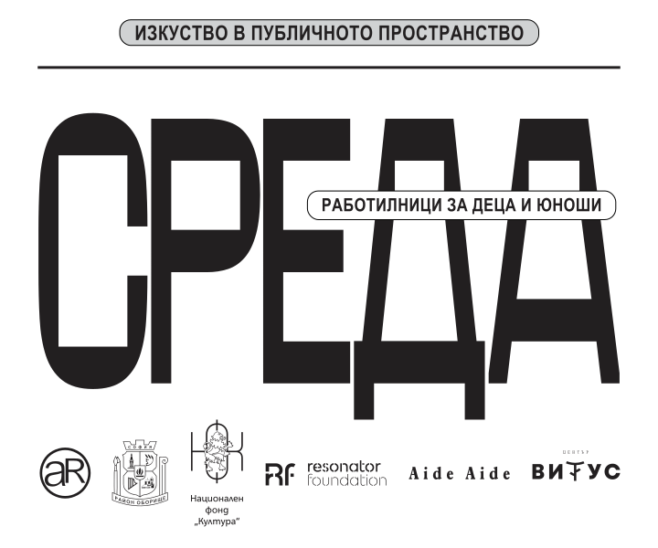

Site-specific инсталацията на Катя Ченг (Тайван) и Георги Томов Георгиев (България).
Резонантно табло„Резонантно табло“ е site-specific творба на артистите Катя Ченг и Георги Томов Георгиев разработена в рамките на проект „Среда“, за моста на бул. „Мадрид„ и бул. „Евлоги и Христо Георгиеви“. Инсталацията съдържа иридисцентен артефакт от рециклирано стъкло, който се задвижва от вибрациите в непосредствената околна среда.
След разговор на артистите с представителите на община „Оборище“ се стигна до решение, да бъде разработена творба, като част от обновителния проект за пешеходното пространство на моста на бул. „Мадрид“.
Артистите разглеждат моста като транзитно място, което свързва хората пресичащи Перловската река. Място, което е изпълнено със забързан хаос на преминаващи автомобили, трамваи, автобуси и пешеходци. Всеки един участник в тази сложна система оставя следи под формата на вибрации, които изграждат звуковия фон на мястото.
Създадените от постоянното движение на пешеходци и превозни средства вибрации, леко задвижват стъкления артефакт намиращ се в основата на творбата. При движението, иридисцентното стъкло блести с цветовете на дъгата, улавяйки променящата се слънчева и изкуствена светлина. Преминаващият пешеходец, заглеждайки се в творбата, ще има възможност да осъзнае съвкупността на движението в непосредствената околна среда, рефлектирано върху леко вибриращия стъклен артефакт.
Инсталацията цели да илюстрира, как всеки човек оформя и влияе на градската среда.
Стъкленият артефакт ще бъде изработен от парченца рециклирано стъкло, събрани в района на бул. „Мадрид“ от деца живеещи в гр. София. Работата с децата има за цел да онагледи възможността за опазване на околната среда и рециклиране, и същевременно да им предостави възможност за участие в създаването на творбата.
Тялото на творбата е разработено съвместно със софийската фирма „Неона“.
Катя Ченг е родена в Чангхуа, Тайван през 1994г. Тя учи в художественото училище Вайсензее в Берлин, където завършва своя магистър по дизайн. Нейната практика се развива върху пресечната точка на фантазията и реалността чрез взаимодействието на светлина, материя и пространствени инсталации. Тя извлича поетични образи от природни явления и митология, за да определи оптичните свойства на материалите и структурните повърхности в работата си. Тя внася артистичната концепция за магията в жизненото пространство, провокирайки зрителя да прекрачи мъгливата граница между фантазия и реалност. Катя живее в Берлин.
Георги Томов Георгиев е роден в София през 1983г. Той завършва Sound Studies & Sonic Arts в Universität der Künste Берлин. Повлиян е от културна среда балансирана върху тънката граница между Изток и Запад. Тази двойственост се проявява и като техника в работата му, сливаща метафизичното и фактическо състояние в единност. Творбите му изследват перспективи върху линейността на времето, надхвърляйки визуалното, за да разкрият преходността на мислите – подход, който проследява съжителството на разностранни проявления на възприятието. Процесът предизвиква въпроси за това ,как и от кого се създават и възприемат нашите реалности. Разтваря статуквото наложено от обществото и размива общоприетите културни възприятия. По този начин зрителя може спонтанно и интуитивно да достигне до същността на концепциите.
Георги работи с ефимерни медиуми – светлина и звук – постигайки абстрактно разбиране за есенцията на обект или пространство. Целта на тази негова практика е не само да рефлектира, но и да аргументира възприятието: поетична реконструкция на реалността, поддържаща идеалистична визия за света; изражение на формирането на мисловни форми в процеса на движение на артиста.
Повече информация за проект „Среда“
